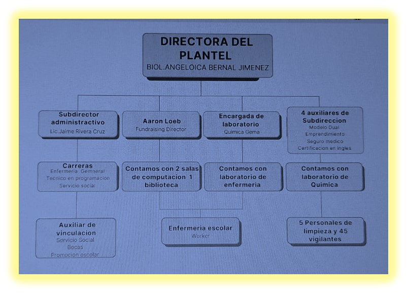
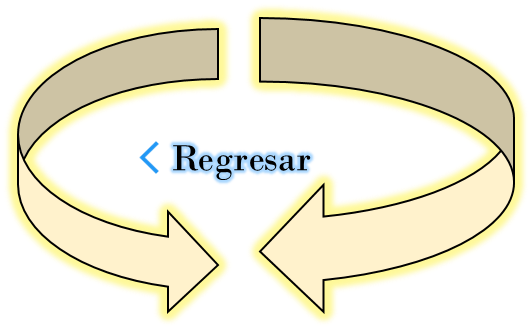

Colegio de Estudios Cientificos y Tecniologicos del Estado de Mexico. Modulo 3: submodulo 2 y submodulo 3.
Nombres del Alumno:Samuel Angelino Garcia
Elaborado por:
Samuel Angelino Garcia.
Grupo:
402
Numero de lista:4
Ciclo Escolar:
2024-2024


""